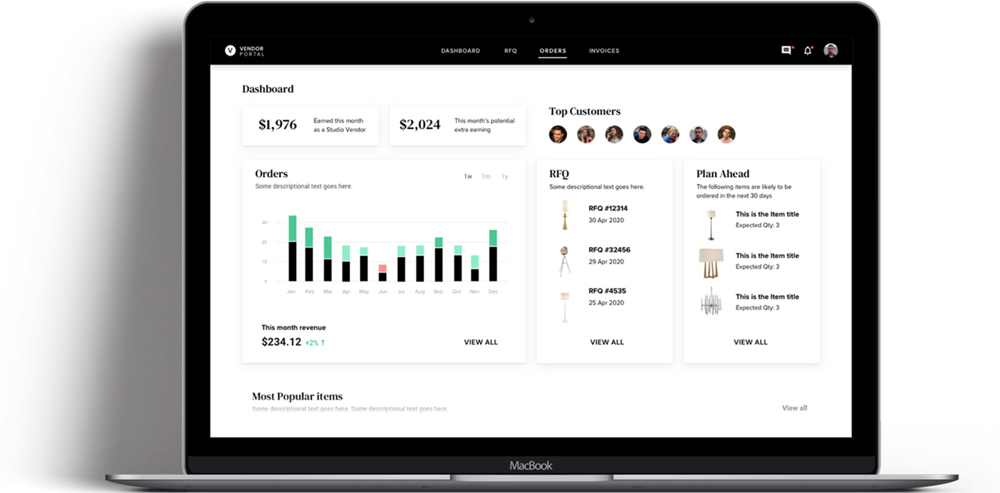
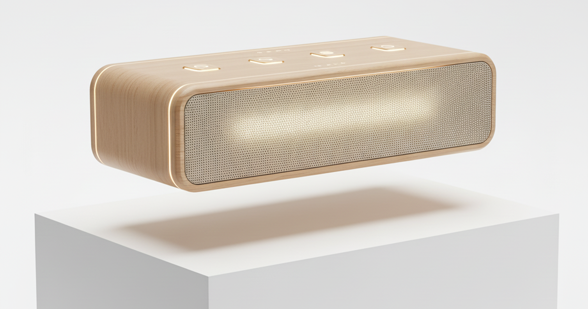
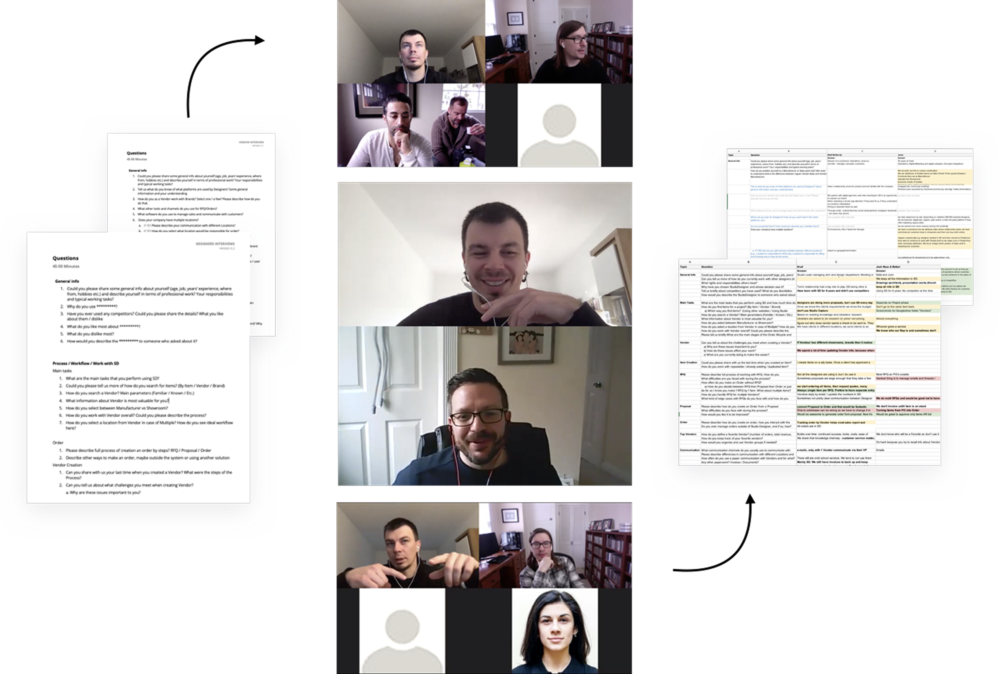
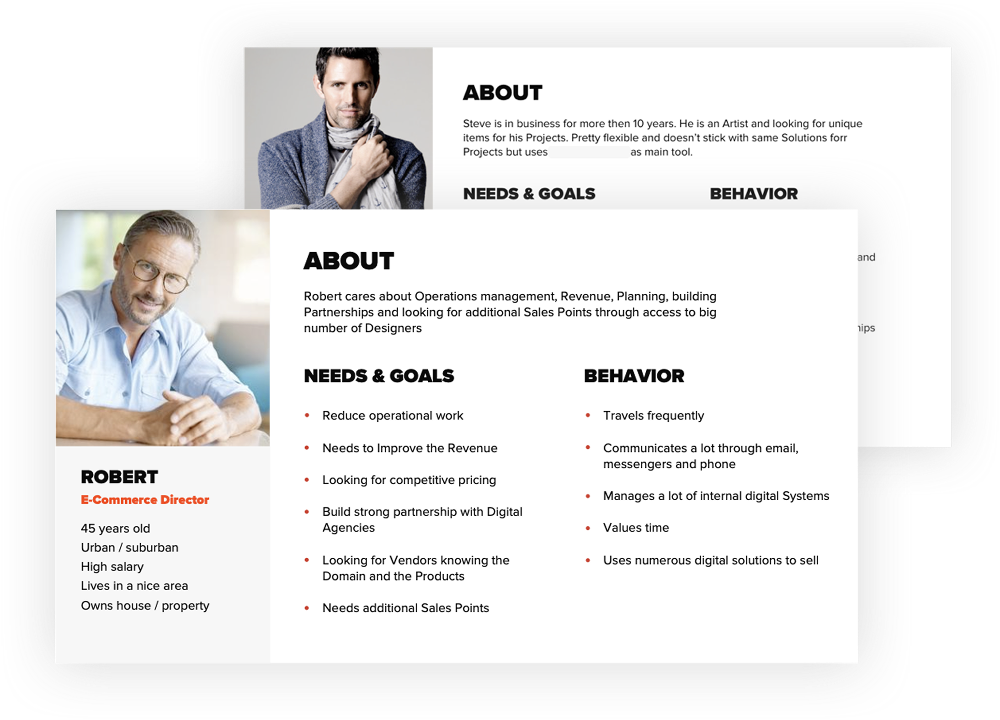
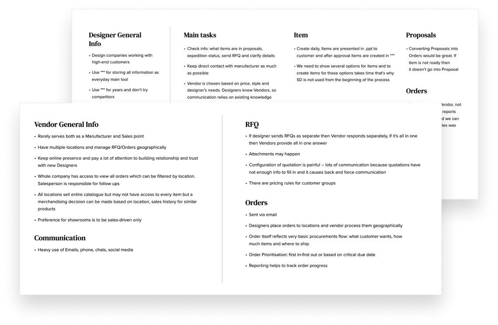
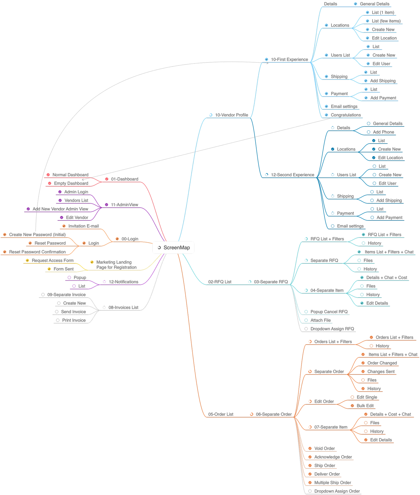
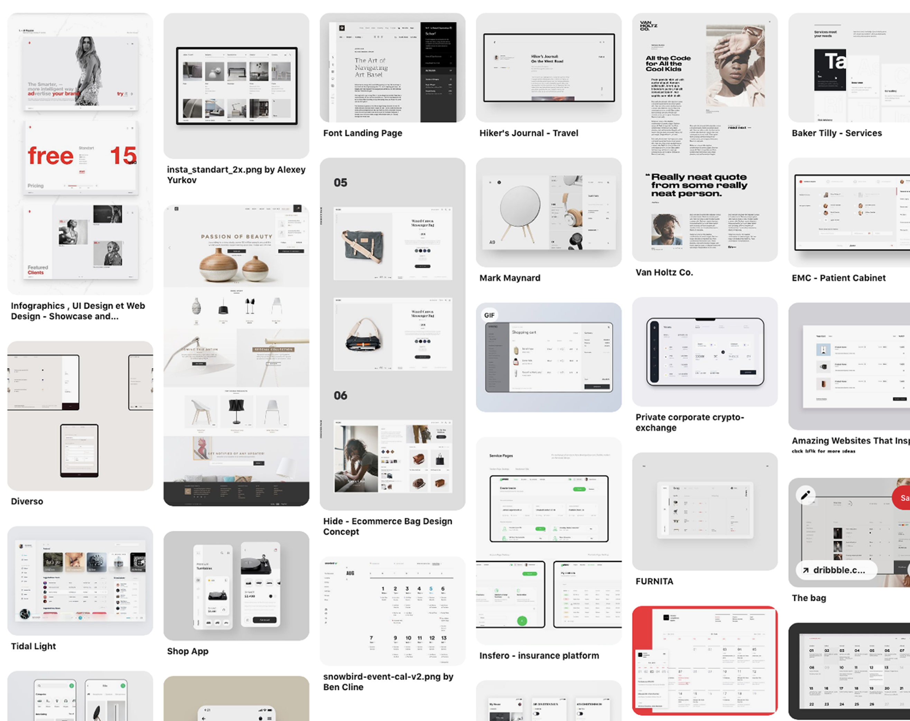
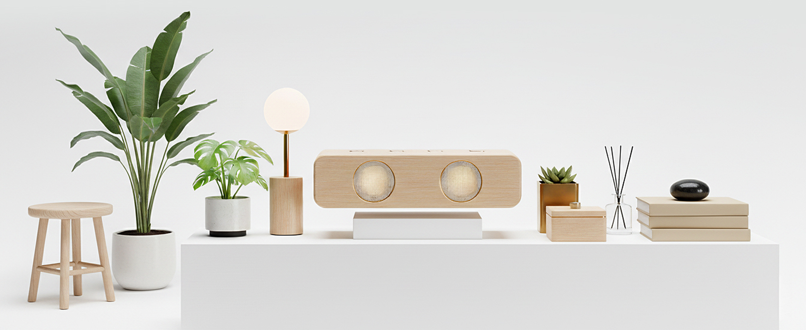

Vendor Portal
I transformed an abstract product idea into a dual-market MVP — on time, on budget, zero post-launch critical issues.
The company had a thriving designer portal but only a vague idea for a vendor product. I led the complete UX strategy — from 10 dual-user interviews through information architecture to a multi-product design system — shipping an MVP that served two markets simultaneously.

I Shaped an Abstract Idea Into a Real Product
The company had already built a successful portal for interior designers. Owners wanted to expand into the vendor market — suppliers of high-fashion interior products — but had only an abstract idea of what that product should look like.
The biggest challenge was threefold: no concrete requirements existed, the timeline was tight, and no design infrastructure was in place. I had to simultaneously validate a market hypothesis, define a product, and establish how the organization would design products going forward.
My Mandate
Validate the vendor market hypothesis and deliver an MVP-ready design within constrained time and effort.

Three Risks That Made This Urgent
Business Risk
Building a vendor product blind risked wasting development resources and undermining confidence in the design process itself. A failed MVP would make future platform scaling nearly impossible.
User Fragmentation
Vendors operated across 5+ disconnected tools daily. A unified platform could consolidate their workflows — but only if the design reflected actual vendor pain points, not stakeholder assumptions.
Competitive Window
Delaying validation meant competitors could enter the vendor market first, permanently shifting potential vendor relationships. Every week of delay was market share lost — speed was a competitive advantage.
I Conducted 10 Interviews Across Two User Groups
I created interview scripts tailored to each group: 5 designers using the existing portal and 5 vendors representing target suppliers. I recorded all sessions and debriefed findings to extract pain points, needs, and opportunities.
Designers revealed hidden friction in vendor discovery. Vendors exposed the daily cost of managing relationships across scattered systems — 15+ minutes per vendor interaction just from tool-switching.

I Synthesized Research Into Four Key Findings
Tool fragmentation was the #1 pain. Vendors operated across 5+ daily tools with duplicate data entry, costing 15+ minutes per interaction.
Designers lacked product visibility. No consolidated way to track which vendors offered which products, directly impacting collection curation time.
Relationship management was ad-hoc. Vendors couldn't track which designers were interested in which products, forcing guesswork in outreach.
Both groups wanted one source of truth. Designers needed current product data; vendors needed assurance their data reached all intended retailers.
A unified system addressing tool fragmentation and relationship visibility would deliver immediate value to both user groups simultaneously — without requiring either audience to compromise.


I Designed a Unified Information Architecture
I converted gathered insights into functionality requirements and mapped them into a system that would serve both designers and vendors. The decision to pursue multi-product architecture from day one — designing one system to power both portals — became the strategic anchor for sustainable scaling.

I created the sitemap of the future solution, mapping every page, state, and interactive module. This helped estimate delivery time accurately and ensured we could deliver design work aligned with the sprint schedule.

I Validated Structure Before Committing to Polish
To deliver faster and reduce the cost of mistakes, I started with wireframes for all core flows. I designed enough screens to demonstrate the future user experience and the live interaction model.
Wireframe feedback sessions with stakeholders caught structural issues early — before visual design investment. This saved rework cycles and aligned the team on product scope before a single mockup was created.

I Established the Visual Language Through Moodboarding
I collected information about stakeholder and user visual preferences, then created a moodboard with alternative visual directions. During feedback sessions, I narrowed the stack to a coherent set that satisfied both business requirements and user expectations.
The resulting visual language defined the foundation for a multi-product design system — consistent enough for brand recognition, flexible enough to extend across products.

I Shipped Production-Ready Mockups and a Multi-Product Design System
I designed mockups covering all critical vendor and designer flows — desktop and tablet, all core interactions (product upload, editing, relationship tracking, reporting), with annotations for every state and edge case.
I handed off via InVision for interactive prototyping and Zeplin for developer specifications. The development team built the live product directly from these designs.
The design system included a component library, color palette, typography, and usage guidelines — establishing a shared visual language for both Designer and Vendor products. This multi-product thinking made future product launches faster.

Six-Phase Approach
What I Delivered — and What It Changed
The MVP launched successfully, establishing a design foundation for the company's expansion into the vendor market. The design system became the reusable asset that made future product launches faster.
Organizationally, the project created something that didn't exist before: a design environment with defined processes, proven collaboration models, and team confidence in a research-driven approach.

What This Project Taught Me
Dual-User Research Prevents Siloed Features
By interviewing designers and vendors together instead of separately, I avoided the trap of building features that serve one group at the expense of the other. The unified perspective made multi-product architecture possible.
System Thinking From Day One Pays Compound Interest
Building with multi-product design system thinking from the start — not as an afterthought — created an asset that accelerated every subsequent product launch. The upfront investment was small; the return was exponential.
Structure Before Polish Reduces Rework
Wireframes caught structural issues that would have been 10x more expensive to fix in high-fidelity mockups. The team aligned on product scope before visual investment, eliminating the most wasteful design cycle: reworking finished screens.
Built Before AI — Would Synthesize Faster Today
This project predates my AI-first era. The entire research synthesis, persona creation, and requirements extraction were done manually — rigorous, but labor-intensive.
Interview Synthesis
Task: Analyze 10 interview transcripts → extract themes, pain points, opportunities → organize by frequency and intensity.
Outcome: What took 1-2 weeks of manual analysis could be done in hours with structured prompting.
Persona & Use Case Generation
Task: Convert interview insights into persona templates → draft use cases and user stories → validate against research evidence.
Outcome: Personas drafted by AI, refined by human review → faster product definition with the same rigor.
IA Proposal & Layout Exploration
Task: Analyze user stories → suggest information architecture → propose feature groupings and navigation hierarchy.
Outcome: IA foundation created by AI, designed and validated by me → architecture established faster without sacrificing quality.
The rigor remains the same; the execution speed accelerates. Today, I would use Claude to synthesize interviews, Figma AI to explore layout variations, and custom MCP tools to auto-document the design system.
Let's Build Something Together
Working on a B2B platform, vendor system, or multi-user product? I bring research-driven design, system-level thinking, and shipping discipline.
Get in Touch